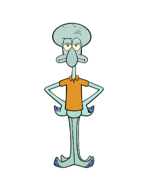
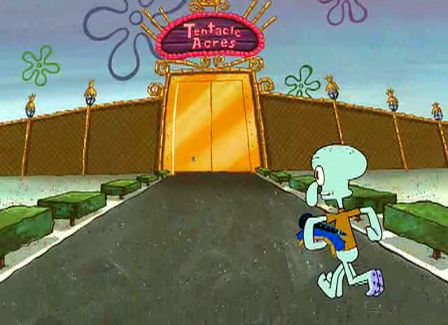

Сквидвард Тэнтеклс
Автор Никита Волков
Сквидвард Джей Кью Тэнтеклс родился у Джеффа и Миссис Тэнтеклс. Отец воспитал его правильно и очень любил. Когда он был ребенком, Сквидвард был зачислен в школу Бикини Боттом. В детстве ему всегда приходилось сидеть за обедом возле мусорных баков, так как многие люди не знали его как друга. Будучи подростком, он соперничал со своим однокурсником по группе Сквильямом Фэнсисоном. В 1998 или январе 1999 года он стал частью "Красти Краб" вместе с Джимом. В тот день, когда Джим уволился, Сквидвард заговорил с ним и мгновенно потерял свои длинные светлые волосы, к его большому огорчению. Некоторое время спустя он работал с поваром, чье имя еще не раскрыто. Однажды Сквидвард работал в саду, когда внезапно на него упал ананас с лодки и разрушил его сад, раздавив его. Губка по имени Губка Боб Квадратные Штаны затем переехал в ананас и Сквидвард был сварливым с тех пор. В какой-то момент он попытался переехать из своего дома из-за нетерпимости к своим соседям, но агент по недвижимости отказался продать свой дом из-за Губки Боба и Патрика, которые украли его личность и обманули ее.
В какой-то момент он переехал из Бикини Боттом в город Сквидград, город, наполненный его собственными сверстниками, другими осьминогами, которые разделяют его вкусы и взгляды на жизнь. Здесь он был вынужден столкнуться с тем, насколько скучным и угнетающим является его желанный образ жизни, и начал скучать по Губке Бобу и Патрику. Он смог в конечном счете освободиться от его связей с небольшим количеством вдохновенной глупости.
В "Обожаю Сквидди" он показал, что он не встречался в течение длительного времени, прежде чем Сквильвия вошла в его жизнь. В какой-то момент он вместе с Губкой Бобом, Патриком, мистером Крабсом, Планктоном и Сэнди отправился на сушу, чтобы забрать секретную формулу крабсбургера у пирата Бургероборода. 6 марта 2017 года Сквидвард отправился на 2000 лет в будущее в результате размораживания в морозильной камере Красти Краб.
Сквидвард - светло-бирюзовый осьминог с фиолетовыми присосками на конце щупалец. У него всего шесть конечностей, две из которых являются руками, а четыре - ногами, которые имеют тенденцию принимать форму знака плюс, когда он стоит на месте. Всякий раз, когда он ходит, его присоски прилипают к полу, что означает, что он ходит с отчетливым хлюпающим звуком. У Сквидварда большой череп с восемью пятнами на макушке. В эпизоде "Первый шеф-повар" показано, что у него когда-то были длинные светлые волосы. У него также худое тело, большой обвисший нос, широкий рот и желтые глаза с прямоугольными темно-бордовыми радужками. Когда он смеется, его нос, кажется, сдувается и надувается многократно (в более ранних эпизодах это соответствовало звуковому эффекту.) Он носит коричневую рубашку.

Его цвет немного изменился на протяжении всех серий. В то время как он показан голубовато-бирюзовым в более ранних эпизодах (наиболее заметный в "Требуется помощник"), он изменяется на более светлый оттенок в более поздних эпизодах. В эпизоде "Ракета Сэнди" показано, что Сквидвард носит старую версию своей ночной рубашки. Он розовый с пурпурными цветами на нем. В более новых эпизодах, таких как "Сентиментальный губка", Сквидвард замечен в своей настоящей ночной рубашке. Это светло-фиолетовая ночная рубашка, которая идет с соответствующим ночным колпаком. Это третья версия его ночной рубашки. Вторая версия появляется в таких эпизодах, как "Лучший служащий месяца" и "Смешливые штаны". В эпизоде "Доска объявлений" показано, что у Сквидварда есть татуировка красной розы на правой руке.
Обо мне
Никита Волков
Автор этого сайта